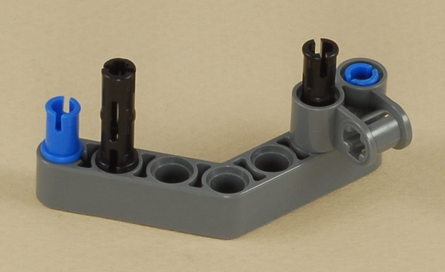

Fun Projects for your LEGO® MINDSTORMS® NXT!
|
|
Fun Projects for your LEGO® MINDSTORMS® NXT! |
| Dragster |
|

1
2
3

4

5

6
| Line up the motors as shown then push them together
so that they all line up, turning the motors by the gears a little as
necessary to get the cross axles to line up with the cross hole in the
center of the middle motor.
The short axles with the larger gears on
them should be pushed all the way into the center motor so that they
"disappear" inside the motors. The long axles with the small gears
on them will insert into the beam hole of the center motor assembly that
is one hole in front of the "elbow" of the angled beam. |

| Check to make sure that the long axles are centered
and pushed all the way towards the center. The tips should just be
visible between the angled beams in the center.
The gears and axles are braced by several beams to keep the axles from
twisting and bending and the gears from separating and grinding under
the high motor torque (twisting force). |
7
| Putting this beam on is tricky, because all six of
the pegs must be lined up at the same time. Hold the beam in place
then wiggle the motors slightly to get all the pegs to line up with
their holes. If only some pegs go in, and the beam jams crooked,
then pull the whole thing off and start over. Be patient, and try
to use only as much force as necessary. Pushing too hard will make
it worse. If you can't get it to work, you can brace the motors with a series of shorter beams, but try to make it as strong as you can. |
8
| The 4-peg plugs fit a little loosely by themselves, so adding a black triple peg down the middle tightens it up. |
9
10
11

12
| Use three wires to connect the three motors to the A, B, and C ports on the NXT. It doesn't matter which is which, so arrange the wires however you like. |
13
14
The "front wing" doubles as a soft bumper in case the dragster crashes into something.
15
| Your dragster is now complete. Note that if you add any more parts to it as decoration or whatever, it may change the weight balance, which may affect the dragster's ability to pop a wheelie. The dragster should rest very lightly on its front wheels, so that almost all of the weight is in the back (but not too much to tip it over when standing still). |

|
Dragster Programming Use the program Dragster for your Dragster. After you press the orange button, the program will count down 3...2...1... before going, so that you have time to step back and be where you want to be to watch it. The program then will power the motors for 3 seconds. This is a simple program and will be easy to modify. For example, the NXT programming system comes with some recorded voice sounds for "three", "two", "one", etc., so you could try making the countdown with a voice instead of beeps. You could also change the amount of time that the motors are on, etc. Don't try turning, though, because the three motors are all bound together with shared axles and forced to go the same speed, so turning will not work. |
| You can adjust the length of the wheelie bar by sliding its axle back and
forth, which will affect how high the wheelie is and how long the dragster holds
it. Reasonably fresh batteries are essential for good power. If your batteries are getting low then you might want to change them. Save the worn batteries for other projects that don't need as much power. Also, note that different types of batteries are capable of putting out different amounts of power all at once. Rechargeable batteries tend to be weaker than normal batteries, for example. |
Challenges
|
|
Copyright
©
2007-2009 by Dave Parker. All rights reserved. |